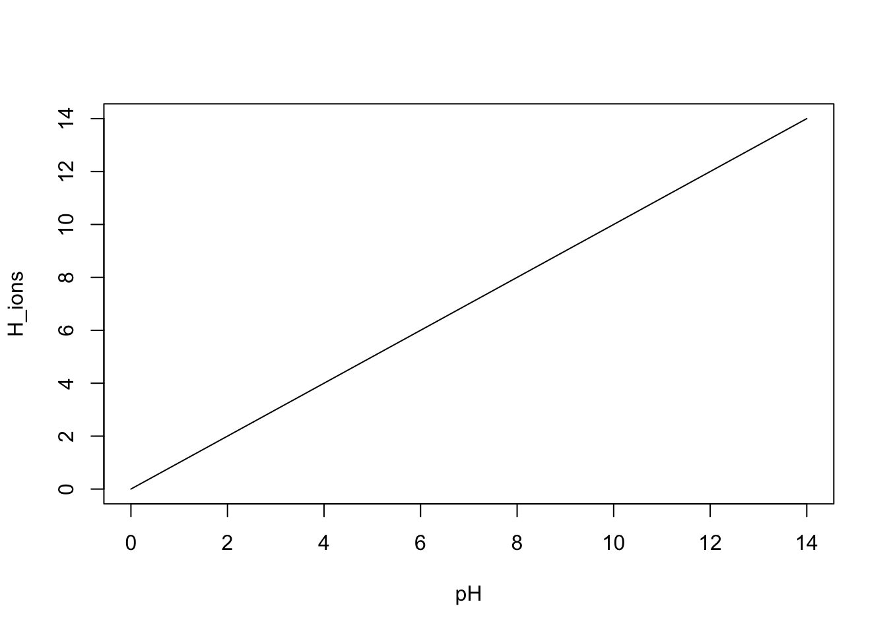
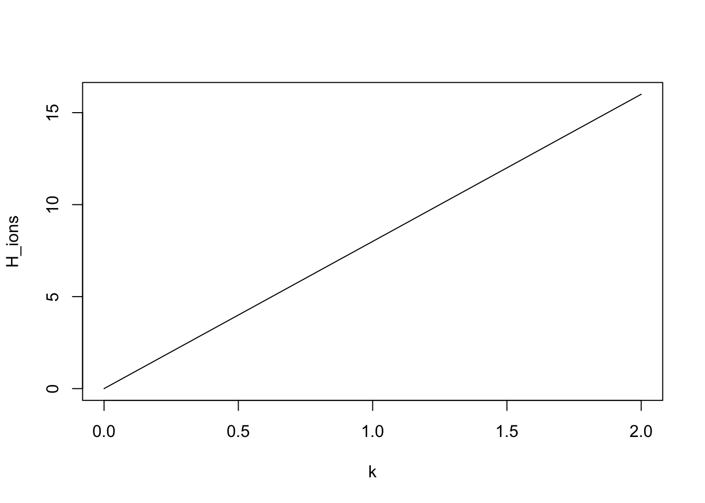

The model parameter space is a nice place
In this section, we are going to learn to visualize the model
parameter space. This is a fundamental concept in the calibration of
models, and it is also a very useful tool to understand the behavior of
a model.
The model (parameter) space is the set of all possible combinations of
the parameters of a model. I usually consider the parametert space as
defined also by the model response (the result the model gives for each
parameter combination).
The model parameter space: one parameter
A model has usually at least one parameter.
Let’s take for example the following model, describing the relationship between soil pH and H\(^+\) ions in the soil solution (totally made up).
pH = seq(from = 0, to = 14, by = 0.01)
k = 1
H_ions = k * pH
plot(pH, H_ions, type="l")
The model space is in this case biimensional, the only dimensions being the parameter \(k\) and the model response. For each level of pH, the model parameter space has a response:
pH = 8
k = seq(from = 0, to = 2, by = 0.01)
H_ions = k * pH
plot(k, H_ions, type="l")
The model parameter space: visualizing a threedimensional space
Most models are more complex, and have more than just one parameter.
But the parameter space is defined in the same way.
It is still quite easy to imagine a model with two parameters, where the
space is threedimensional. For example we can consider the function
linking soil respiration and temperature developed by Llloyd and Taylor
(1994) onto the Arrhenius function:
\[ R_{10} = \frac {R} {e^{ E_0 \cdot \left( \frac{1}{283.15 - T_0} - \frac{1}{T-T_0} \right)}} \]
Where \(R\) is the measured
respiration, \(R_{10}\) is the
standardized respiration at 10\(^{\circ}\) C, \(T\) is the current soil temperature, \(E_0\) is the activation energy of the
organic matter we are considering, and \(T_0\) is a temperature scaling
parameter.
We can explore the surface of the response of the function within a
certain range of the two parameters \(E_0\) and \(T_0\) for a measured respiration of, say,
356 g per hour at 27\(^{\circ}\)
C.
We first define the Lloyd and Taylor function
# defining first the LLoyd and Taylor function
lloydtaylor <- function(resp, temp, T0, E0){
#rearranging Eq. 11 in LLoyd and Taylor 1994 for R_10 (respiration at standard 10 degrees)
R_10 = resp / (exp(E0 * ((1/(283.15 - T0)) - (1/((temp+273.1) - T0)))) )
return(R_10)
}And now we can explore the parameter space defined by the function at 356 g per hour at 27\(^{\circ}\) C and with a range of \(E_0\) between 290 and 330 and \(T_0\) betweeen 210 and 230:
E0_vec = seq(from = 290, to = 330, by = 0.1)
T0_vec = seq(from = 210, to = 230, by = 0.1)For the moment do not focus too much on understanding the code details, even if it is useful if you do. What we are doing here is creating a matrix where one dimension of the matrix is the values we give to the parameter \(E_0\) and another \(T_0\), and then feed to the model the values in correspondence of each cell of the matrix to calculate the model response:
#defining the matrix to store the results
response <- mat.or.vec(length(E0_vec), length(T0_vec))
for(i in 1:length(E0_vec)){ #loop for each E0 value
for (j in 1:length(T0_vec)){ #nested loop, for each T0 value with each E0 value
response[i,j] = lloydtaylor(resp = 365,
temp = 27,
T0 = T0_vec[i],
E0 = E0_vec[j])
}
}All what we have left to do not is to plot the space we just
exploredm, which in this case is a three dimensional surface.
This is not necessarily straightforward to do in R, but I hope the
concept by now is.
# install the package in case you don't have it
# install.packages("plot3D")
library(plot3D) # load the package for the surface plot
persp3D(z = response, x = E0_vec, y = T0_vec, theta = 30, phi = 30, col = "lightblue", border = "cadetblue", shade = 0.5, ticktype = "detailed", xlab = "E0", ylab = "T0", zlab = "R10", nticks = 5)
As you can see, in this case some of the parameter values are
unfeasible, resulting in NAs (the part of the space without any color).
This kind of exploration is pretty useful to understand the model
behavior and to identify the feasible parameter space, but of course it
becomes challenging when the space has more dimensions than 3.
It is nevertheless possible to find workarounds, such as plotting
separately each parameter dimension against the response with dots for
each cell.